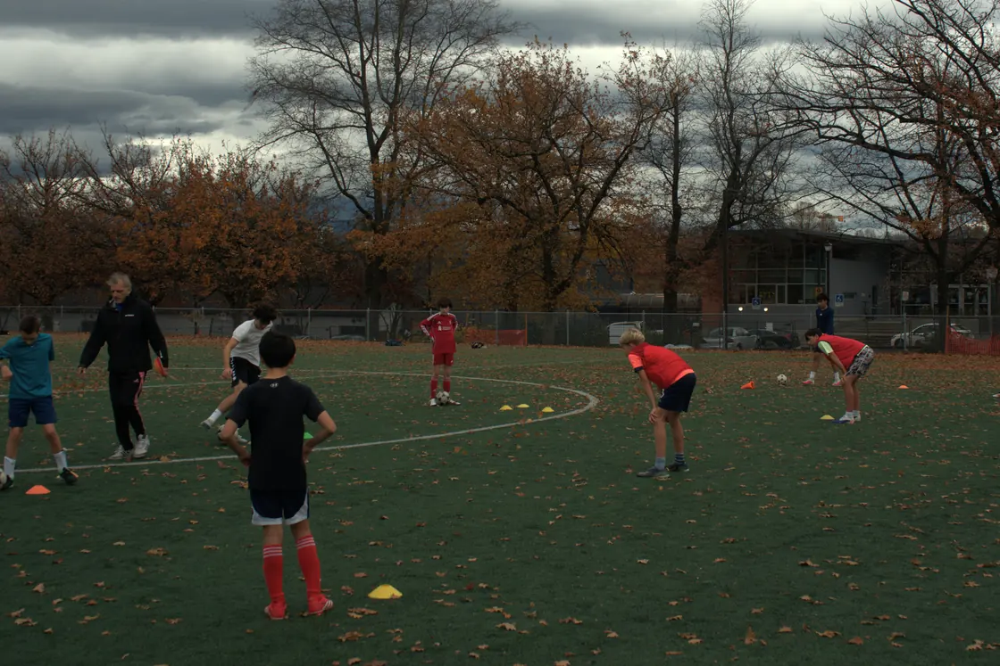
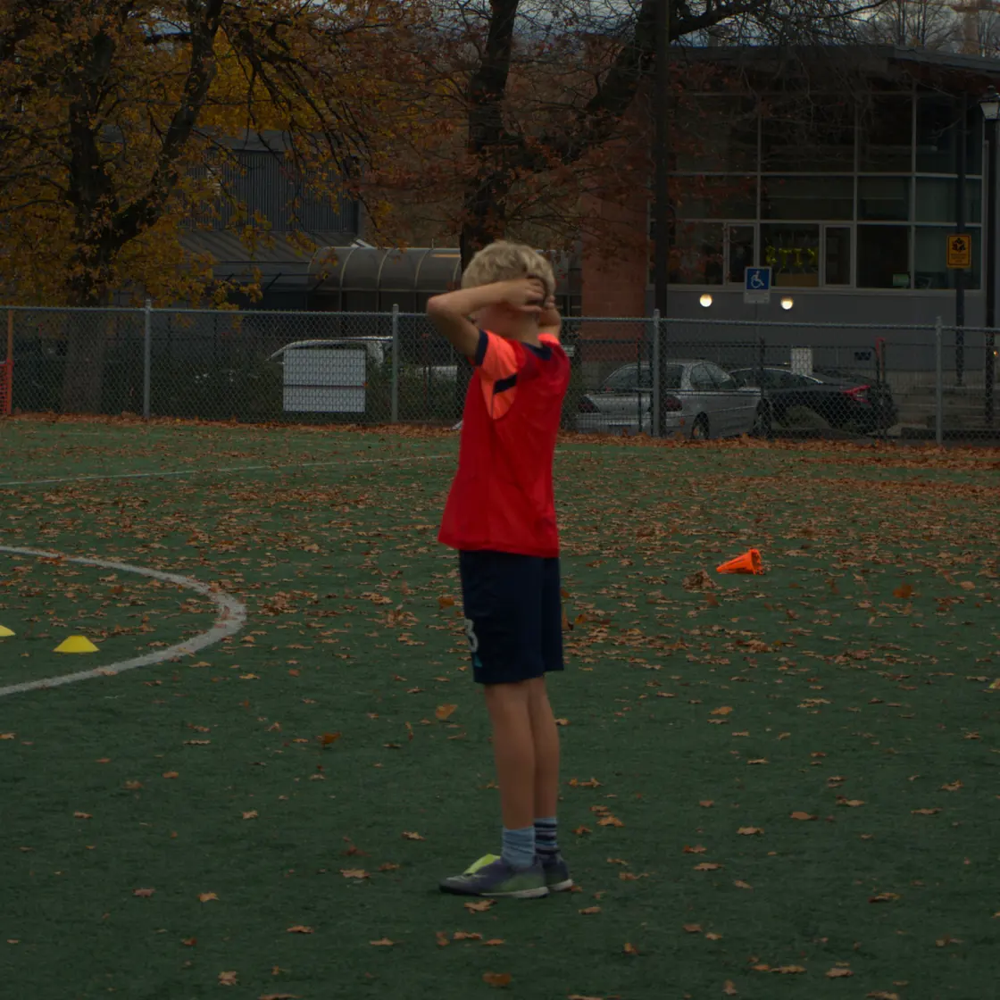

Tuesday9:30–11:00 AM
Women’s soccer · Fen Burdett StadiumNorth Vancouver · Valentinos Dinglis
$20 per sessionUp to 8 players expected this week · 20 maximum
Weekly soccer training
Youth in Kitsilano · Women’s soccer in North Vancouver
Wednesday3:45–5:15 PMAges 9–14 · Connaught ParkValentinos Dinglis & Romeo Dinglis$30 drop-in$95 · 4 consecutive sessionsUp to 2 players expected this week · 20 maximumSave $25 vs 4 drop-ins
Thursday4:30–5:30 PMAges 6–9 · Connaught ParkValentinos Dinglis$25 drop-in$80 · 4 consecutive sessionsUp to 0 players expected this week · 20 maximumSave $20 vs 4 drop-ins
Friday3:45–5:00 PMAges 6–12 · Connaught ParkRomeo Dinglis$25 drop-in$80 · 4 consecutive sessionsUp to 3 players expected this week · 20 maximumSave $20 vs 4 drop-ins
Sunday9:00–10:30 AMAges 6–9 · Kitsilano TurfValentinos Dinglis$30 drop-in$95 · 4 consecutive sessionsUp to 6 players expected this week · 20 maximumSave $25 vs 4 drop-ins
Simple booking, flexible payment
Prices are per player in CAD. For youth groups, a pass covers four consecutive scheduled sessions on the chosen weekday, starting on the date you select when registering; it is not an unlimited calendar-month pass. Tuesday women’s soccer is $20 per session.
Choose “Register for drop-in” for the group you want. For youth groups, use a parent or guardian’s email. After the team confirms space, your confirmation email includes payment instructions. Drop-in confirmations include attendance buttons; open your choice and press Confirm response to save it. Pass confirmations list your four confirmed dates. Reply to the team if your plans change. If your session is approaching and you have not received a confirmation, contact the team to check your request.
Youth group sessions run Wednesday, Thursday, Friday and Sunday. The Tuesday women’s group is coached by Valentinos Dinglis and currently has 8 of 20 players (coach-reported). Places are confirmed by the team after registration.
Youth training in action
On the field with Star Soccer


On the field
What to expect at training
- Settle in and get moving
Get moving with the ball, build confidence joining in and prepare for the session’s technical activities.
- Practice with purpose
Work on touch, timing and body shape, then practise noticing space, teammates and pressure before choosing the next action.
- Put it into play
Apply ball control and decisions in game-like challenges, with feedback that helps players understand what to try next.
The activities are adapted to the group rather than a fixed minute-by-minute template.
Learn how our sessions workChoosing your soccer school
Weekly training questions
Which group should I choose?
Start with your player’s age, then pick a day and venue from the schedule above. Wednesday is for ages 9–14; Thursday and Sunday are ages 6–9; Friday is ages 6–12. Beginners are welcome, and you can share their experience when registering.
How does weekly training compare with private coaching?
Weekly groups let players practise ball skills, game understanding and decisions with others in their age range. Private coaching gives an individual player or small group more time to focus on goals discussed with the coach. Both follow our practice-to-play approach.
Can I start with a drop-in?
Yes. Choose “Register for drop-in” for the group you want. The form shows the upcoming session date. Contact the team if you need another date. The team confirms space by email; use the attendance buttons in that email to respond.
How does the four-session pass work?
Your pass covers four consecutive scheduled dates on one training day. The next session is selected automatically, and the registration calendar lets you choose a different eligible start. You see the fourth-session end date before registering.
Where do I meet the coach?
Youth weekly sessions use Connaught Park and Kitsilano Turf; Tuesday women’s soccer runs at Fen Burdett Stadium. Your confirmation and coaching team provide the field-side meeting point. Bring a ball, water, appropriate footwear and weather-ready layers.
What if a player is sick, misses a date or the weather changes?
Contact the team about cancellations, refunds, missed sessions, pass-date changes and weather before booking. Ask which arrangements apply to your booking; do not assume a missed date transfers automatically.
Prefer one-to-one support? See private soccer coaching in Vancouver.